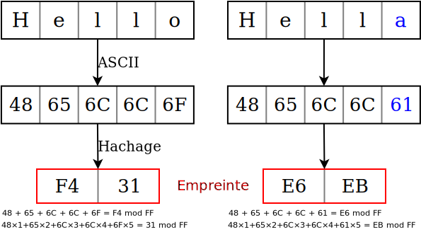

Utilitaire d’archivage
Scripting system
Justin Bossard
Antoine Feuillette
Présentation du projet
Étapes
- Récupération d’archive
zipsur serveur Web distant - Décompression archive → dump SQL
- Vérification de changements
- Compression en
tgz - Envoi sur serveur d’archivage SSH en SFTP
En parallèle
- Suppression sauvegardes trop anciennes
- Écriture logs et envoi de mail
Fonctionnalités attendues
Vérification de modifications
Utilisation de checksum sur 256 bits
Très faible probabilité de collisions

Serveur
Sur Raspberry Pi 4
Web
Avec Apache, port 80 (http) ou 443
(https)

SSH (Port 22)
Suppression anciennes sauvegardes
Connexion avec paires de clés RSA
Suivi des opérations
Écriture de logs

Spécifications selon cas d’erreurs possibles
Envoi de mails
Avec Mutt, via serveur SMTP externe (Zoho Mail)
Automatisation
Utilisation de Cron (crontab -e)
:
0 4 * * * /path/to/archive.shExemple avec fcron :
&bootrun(true) 0 4 * * * /path/to/archive.shSolution technique
Fichiers
.
|- archive.sh # Script bash
|- archive.conf # Fichier de configuration
|- archive.log # Logs du script
|- .prevChecksum # Somme de contrôle du précédent fichierFonctions du script
ecrireLog $1 $2-
$1correspond au succès ou à l’échec de l’opération,$2correspond à la somme de contrôle du fichier ou au motif de l’erreur envoyerMail $1 $2-
$2correspond au corps du message en cas d’échec combo $1 $2- combine les deux fonctions précédentes
Organisation du script
Pour gérer toutes les erreurs :
Organisation de la config
- Configuration générale
- Configuration du serveur SSH
- Configuration des mails + serveur SMTP
Configuration générale
emplacementLog=./archive.log- Définit où les logs sont enregistrés.
logStdout=0-
En cas d’échec, redirige le motif à la sortie standard (
0) ou pas (1). archiveURL- Définit l’emplacement de l’archive via une URL.
Serveur d’archivage
adresseArchivage- Adresse IP du serveur d’archivage.
usernameSSH- Nom d’utilisateur à utiliser.
pathSSH- Chemin sur lequel enregistrer les archives.
dureeConservation=30- Durée de conservation des archives, en jours.
Envoi de mails
envoyerMail=1-
Jamais (
0), en cas d’échec (1) ou toujours (2). mailDestinataires=(dest1@mail.org)- Destinataires du mail.
objSuccesetobjEchec- Objet du mail en cas de succès/échec.
joindreLog=1-
Comme
$envoyerMail muttrcUtilisateur=1-
Utiliser le
~/.muttrcutilisateur (0) ou non (1).
Serveur SMTP
Uniquement si muttrcUtilisateur=1.
serveurHote- Serveur SMTP qui gère l’envoi de mails.
port- Port sur lequel contacter le serveur.
mailEnvoyeuretmotDePasse-
Pour s’identifier sur
serveurHote.
Démonstration
Test normal
Test avec fichier identique
Test avec serveur d’archivage inaccessible
Conclusion
Solution fonctionnelle, qui considère tous les cas de figures
Amélioration : ne pas stocker le mot de passe mail en clair (voir GnuPG)